↓
Formation of the Solar System and the Sun.
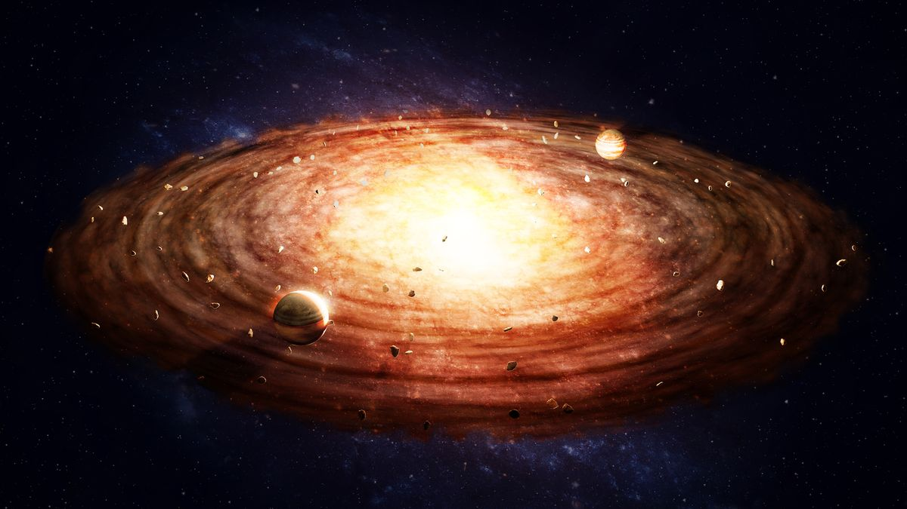
Formation of Earth and the Moon after a giant impact. The young planet was covered by a global
magma ocean
and experienced intense asteroid bombardment.
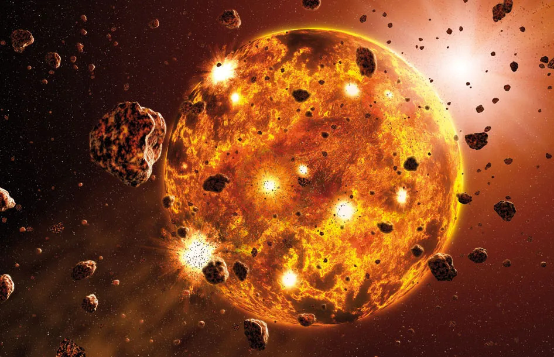
Earth's crust gradually cooled and stabilized.
The first oceans formed, creating conditions that could
support
the emergence of life.
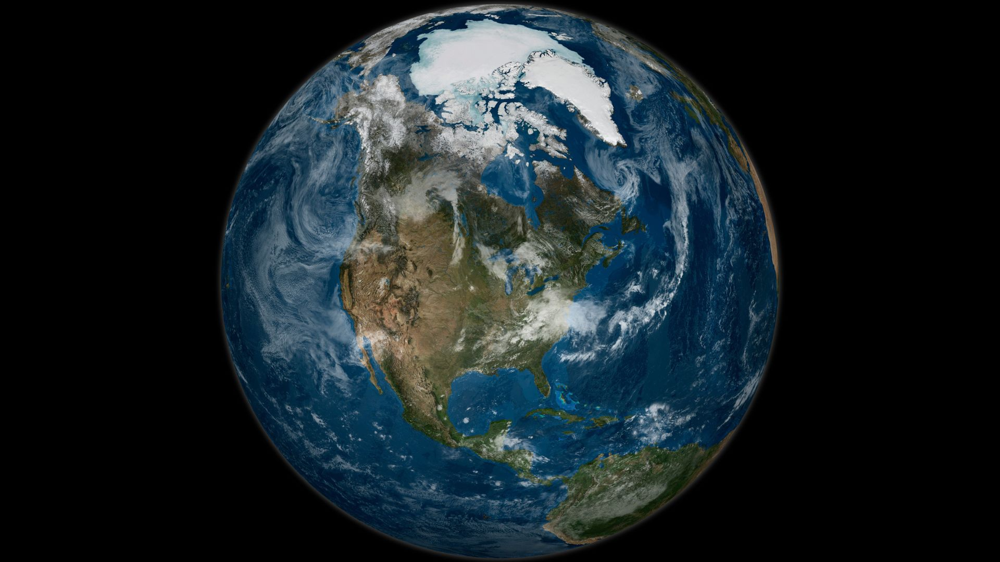
Archean Eon. The first microbial life appeared and diversified in the oceans.
Photosynthetic organisms
evolved
and began producing oxygen.
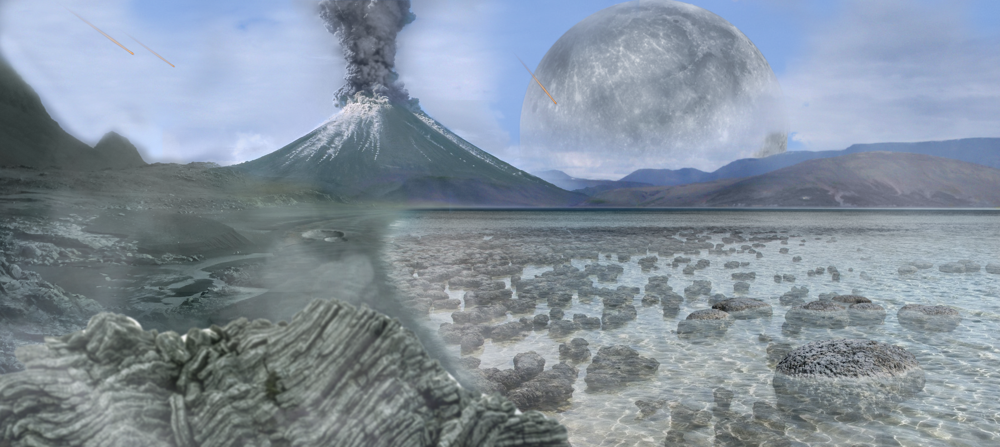
Proterozoic Eon. Atmospheric oxygen increased significantly, complex cells (eukaryotes) evolved,
multicellular
organisms appeared, and the first animals emerged near the end of this era.
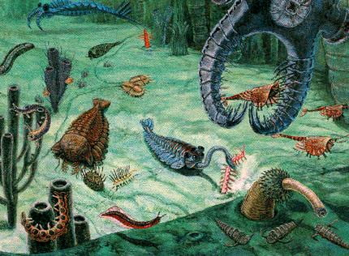
Cambrian Explosion. Most major groups of animals appeared in a relatively short geological interval.
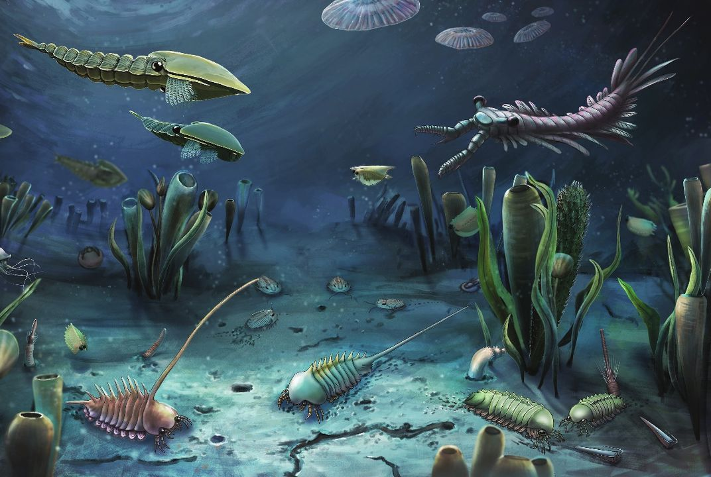
Plants and animals colonized land. Early forests and the first terrestrial ecosystems developed.
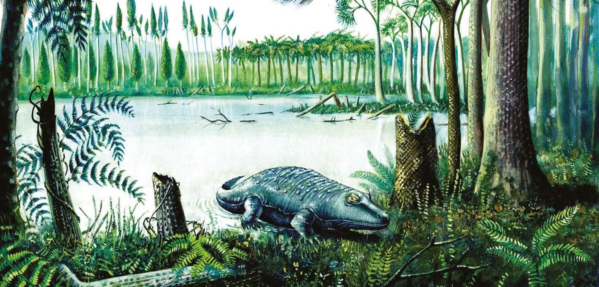
Mesozoic Era (Age of Dinosaurs). Dinosaurs dominated terrestrial environments
while mammals and birds first
evolved.
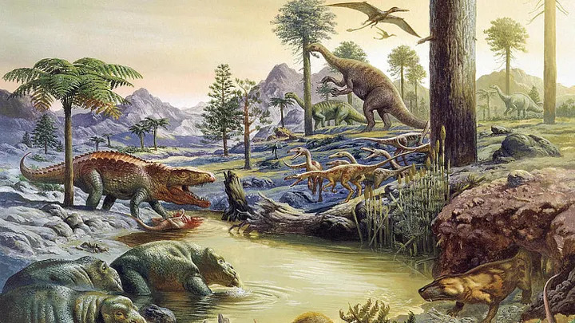
Cretaceous – Paleogene extinction event.
Non-avian dinosaurs disappeared, opening ecological niches for
mammals.
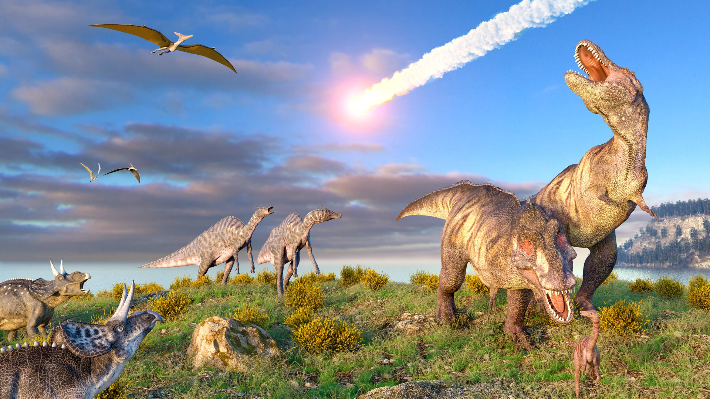
Cenozoic Era (Age of Mammals).
Mammals diversified and modern ecosystems gradually formed.
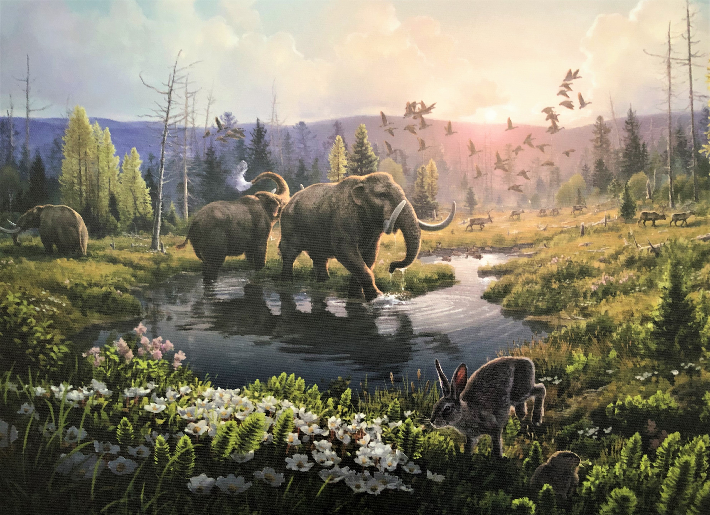
Evolution of hominins and early human ancestors in Africa.
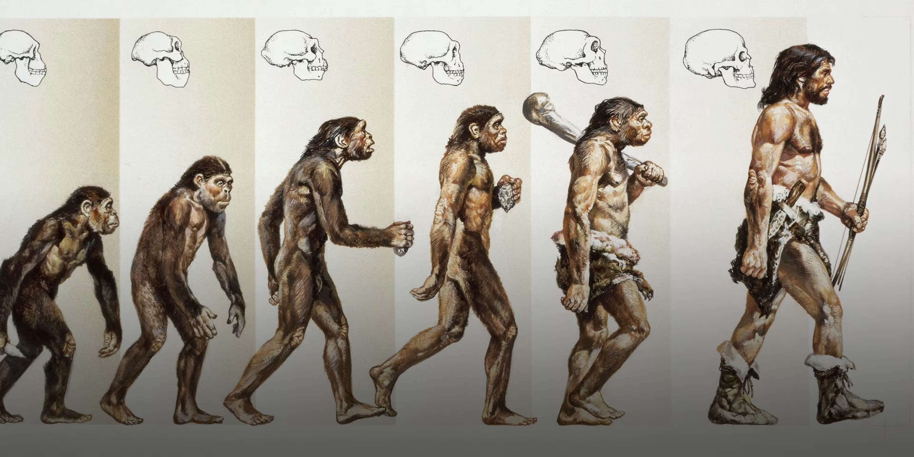
Appearance of Homo sapiens.
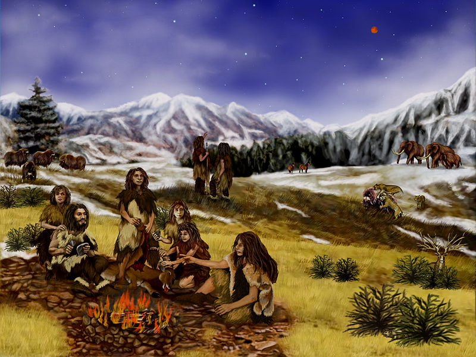
Development of agriculture and the first civilizations.
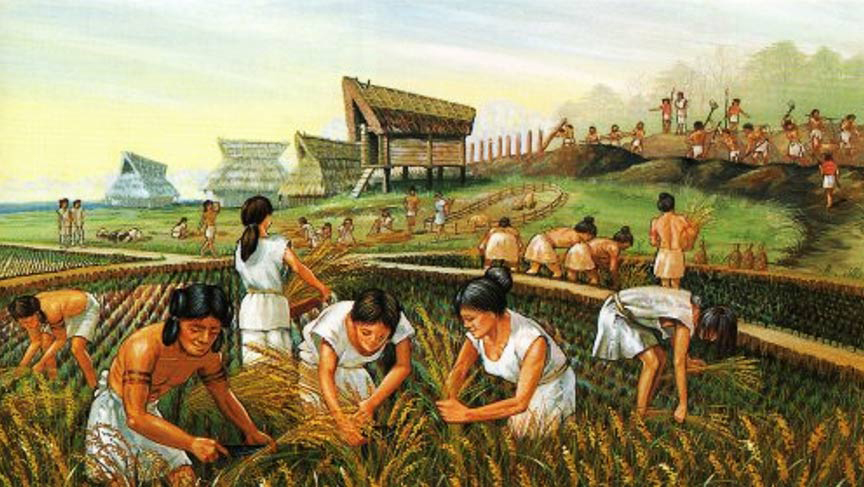
Anthropocene. Human activity has become a major force shaping
Earth's climate, ecosystems, and geology.